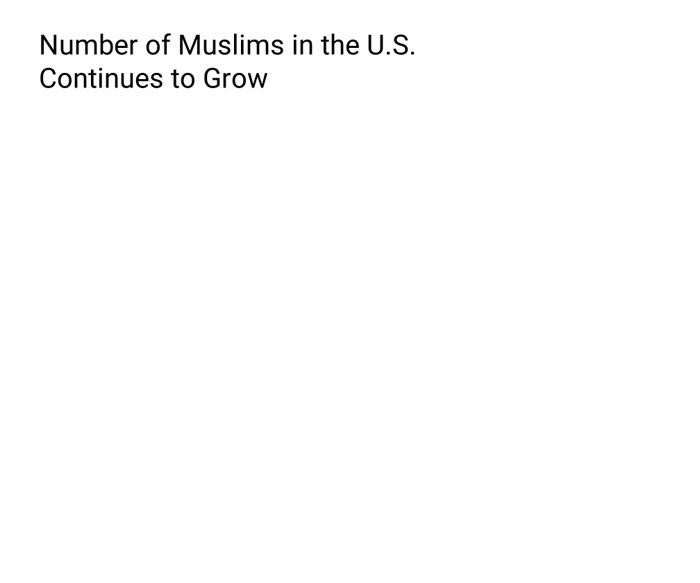

Source: Pixabay
(CHICAGO, Feb. 27, 2025) – Muslim communities across Illinois have begun observing Ramadan, the holiest month in the Islamic calendar, following the sunset on February 28. This sacred period, marked by fasting from dawn to sunset, increased prayer, and acts of charity, is a time for self-discipline, spiritual reflection, and strengthening community bonds.
Ramadan, observed by approximately 3.5 million Muslims, follows the lunar calendar and begins with the sighting of the new moon. It will last 30 days, concluding with Eid al-Fitr, a joyous holiday marked by communal prayers, feasting, and gift-giving.
What is Ramadan and Why is it Important?
For Muslims, Ramadan is more than just abstaining from food and drink during daylight hours. It is a time to purify the soul, strengthen faith, and practice self-restraint. The fast, known as Sawm, is one of the Five Pillars of Islam, which also include faith (Shahada), prayer (Salah), charity (Zakat), and pilgrimage (Hajj).
“The fasting is more than just not eating. It is about feeling what those who can’t put food on the table are going through, and helping out as much as you can,” said Mustafa Disouky, a Muslim resident of Forest Park.
“It’s also about controlling anger, avoiding gossip, and focusing on personal growth. It feeds the soul, and acts as a wake-up call, in a way,” he added.
During Ramadan, Muslims wake up before dawn for Suhoor, a pre-fasting meal, and break their fast at sunset with Iftar, which traditionally begins with dates and water before a larger meal.
Source: Pew Research Center
How Illinois’ Muslim Communities Are Preparing
Mosques and community centers across Illinois have been preparing for weeks to accommodate the spiritual and social needs of worshippers. The Islamic Society of Northwest Suburbs (ISNS) in Rolling Meadows has organized nightly Taraweeh prayers—special congregational prayers held only in Ramadan.
“There is normally an influx of worshippers during this time, mainly because everyone comes together to do the best they can,” said Maram Ibrahim, a community volunteer.
“It’s always heartwarming to witness young kids playing around after fasting for the first time, people coming together to share their faith and strengthen their bond with God, and even something as simple as witnessing your community’s generosity and kindness.”
The Muslim Community Center (MCC) in Lombard is also gearing up for a month filled with charity drives and communal Iftars. Volunteers are distributing food packages to low-income families and preparing for Zakat, the obligatory almsgiving that many Muslims choose to pay during Ramadan.
“Ramadan reminds us to give back,” said Mahmoud Elsayed, a 20-year-old International Student who is observing Ramadan for the first time in Illinois.“It’s a time when we prioritize helping others, whether it’s through things like donating money, feeding the hungry, or simply being a kinder in our day to day lives and interactions. It is also my first time celebrating it without my family abroad, but such acts of kindness from the mosques and volunteers and the local events and the people here make me feel like I am still part of the community.”
A Growing Muslim Population in Illinois
Illinois is home to one of the largest Muslim populations in the U.S., particularly in the Chicago metropolitan area. According to the Institute for Social Policy and Understanding (ISPU), Muslims make up approximately 2.8% of Illinois’ population, contributing to the state’s cultural and religious diversity.
Across the state, schools and workplaces are becoming more aware of Ramadan observances, with some districts offering accommodations for fasting students and companies adjusting schedules to support Muslim employees.
“My university (University of Illinois Chicago) is being very accommodating. Professors have been asking me if I need extra time for assignments, ask how they accommodate, and overall are being very supportive. I genuinely feel very blessed,” Elsayed added.
To know more about the prayer times in Ramadan in your area, visit AlAdhan.